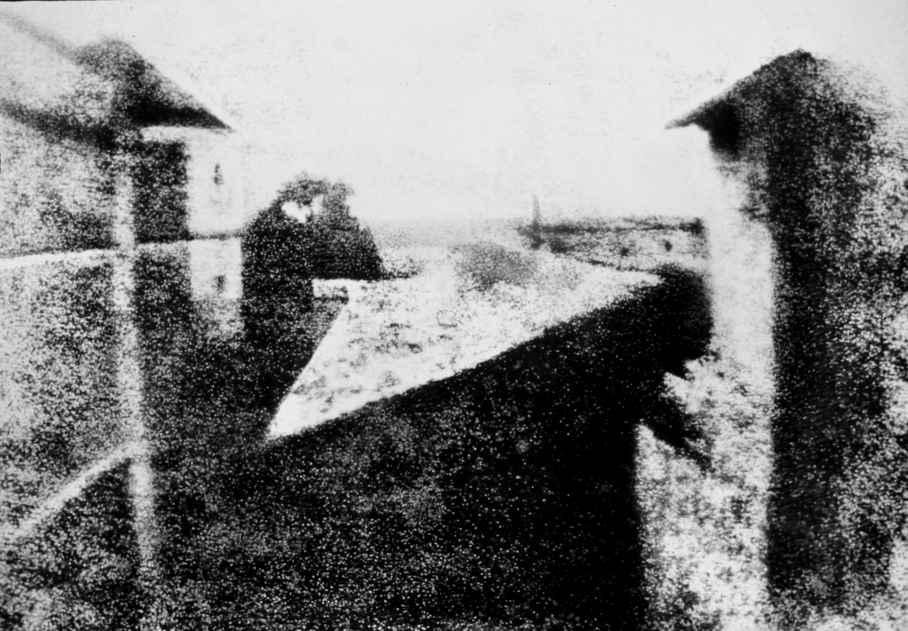
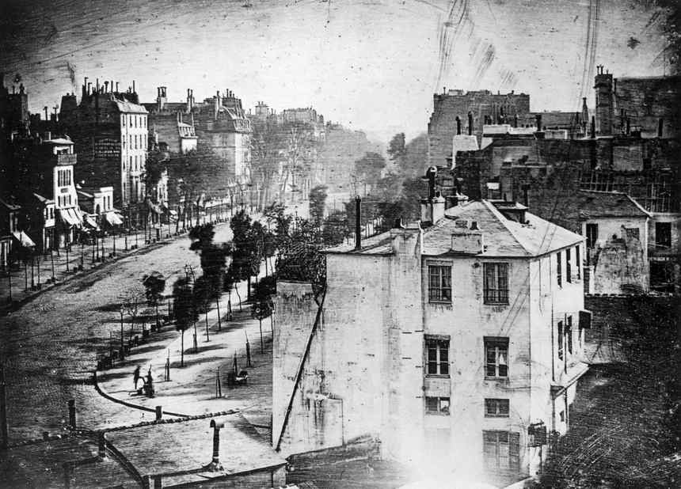

A factory for 1/1 photographs
The file sits on the chain.
OnPlate registers a digital photograph so a later viewer can prove which bytes were stored, who holds title, and whether the work was parked for safekeeping. Nothing in that file lives on IPFS or a private server.
This is a provenance tool for a photograph, not a marketplace for a pointer. Photo archives, university collections, galleries, and independent artists can mount a work once and keep the original bytes readable from Ethereum.
Add a photograph View the photographs
Who it is for
- Photo archives that need a public, durable copy of a digital master whose paper or plate original is unique, lost, or hard to visit.
- University collections that teach with scans and want the file, the hash, and the title in one place a student can check.
- Galleries that sell or loan a 1/1 digital print and need title that cannot be listed on another market without the artist’s own plate.
- Independent artists who want the photograph itself on-chain, with a vault that can only send it home.
What four pieces can hold
Anyone may register a photograph of at most 73,728 bytes — four full on-chain pieces. A larger file needs an invitation. These historic public-domain photographs are packed to that open size so the limit is visible, not abstract. The originals are unique plates, government negatives, or NASA frames; the copies people share often lose that home.
-

View from the Window at Le Gras Nicéphore Niépce, c. 1826–27. The earliest surviving camera photograph. The pewter plate is unique. -

Boulevard du Temple Louis Daguerre, 1838. An early daguerreotype of a city. The original plate has spent long stretches with an uncertain home. -

Migrant Mother Dorothea Lange for the U.S. Farm Security Administration, 1936. A government negative whose copies rarely name the FSA plate. -
Earthrise William Anders / NASA, Apollo 8, 1968. A Hasselblad frame. The original magazine is in NASA’s archive. -

Addie Card, 12 years old Lewis Hine, 1910. A numbered National Child Labor Committee plate. Reproductions often drop the caption.
Each image above is a JPEG packed into four pieces. Sources and licenses are in examples/SOURCES.md.
How a plate works
The file is split into chunk contracts. The plate stores the keccak256 of those bytes, a small thumbnail, and the title. Transfers and marketplace approvals are off. Parking moves the token to a vault that can only return it to the wallet it came from — the same added security a mounted work used on Stillwater.
A photograph larger than four pieces needs an invitation. Send a Foundry keystore’s 0x address in a direct message on X to @A_is_A.